Dream, Egg
and Mystery
A surreal three-level game where progression is shown through transformation instead of UI. Built in Processing with illustrated assets, it combines click interaction, shooting, and platforming inside a dream world inspired by Yume Nikki.
Demo on YouTube ↗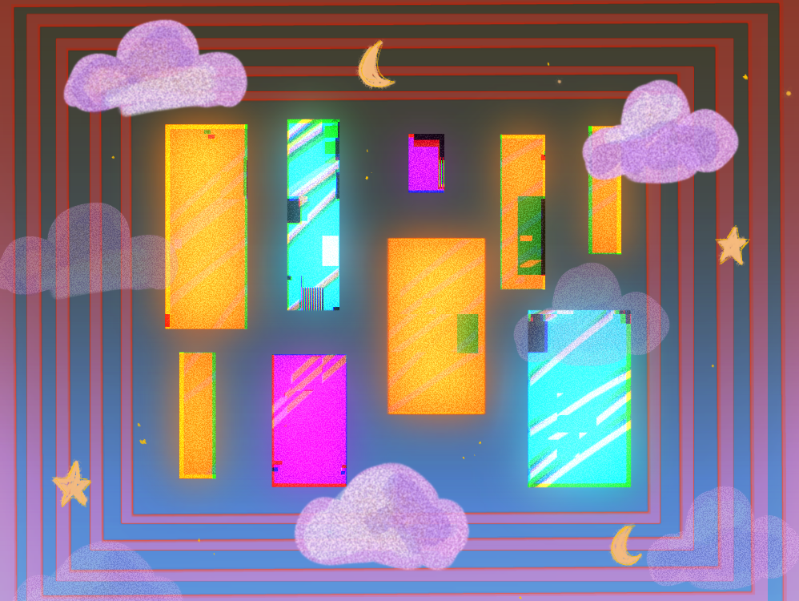
The Design Challenge
The project focused on guiding players through a surreal world with minimal instruction. It opens with short control instructions, then teaches progression through doors, NPC interaction, the egg's visual changes, sound, and hit feedback.
The game combines three interaction systems: click-based combat, projectile shooting, and platform traversal. The challenge is to integrate the three separate prototypes into a complete game.
The world draws from dream logic and Yume Nikki: disconnected rooms, strange characters, abrupt transitions, and symbolic objects. The egg works as both companion and progress marker.


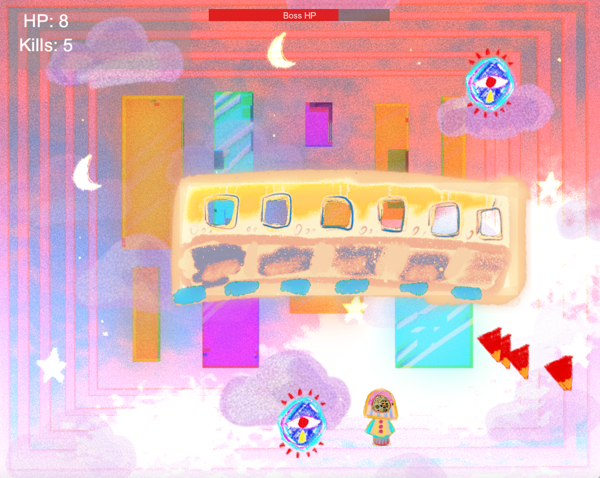
Built on Earlier Work
The final game grew from three earlier assignments. Each one introduced a different mechanic, and the final project combined them into one playable structure with a shared visual language.
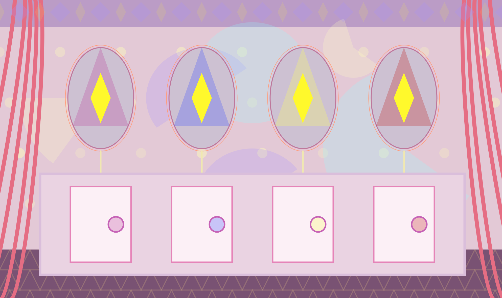
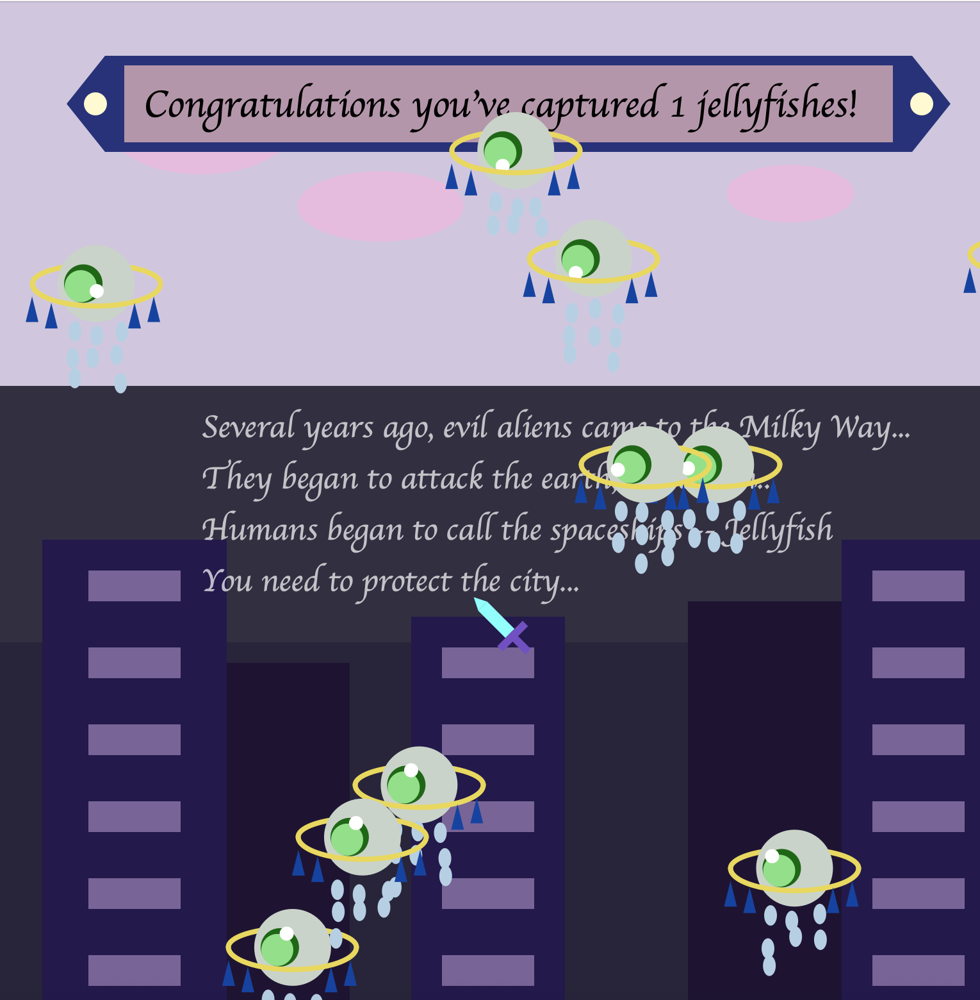
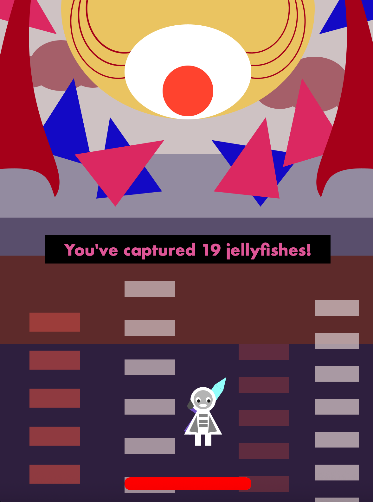
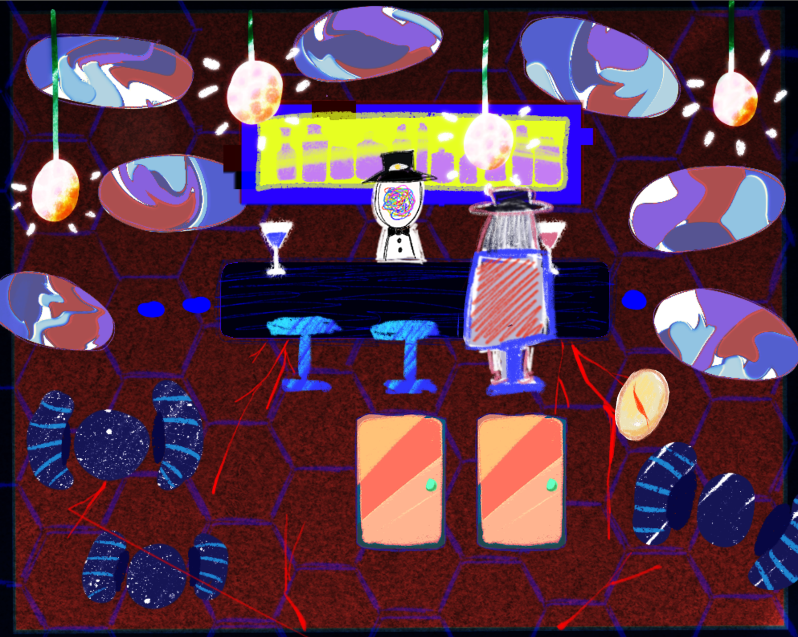
Iteration & Development
Assembly & Navigation
The first version connected the bedroom, universe hub, and three levels into a working loop. Each level functioned on its own, but the overall flow was unclear. Some players entered doors before interacting with the NPC, which disrupted progression and weakened the intended sequence.
Clarity & Level Gating
Feedback showed that players were not always sure where to go next. Instead of adding more written instructions, I redesigned the progression around locked doors. Each door only becomes available after the previous level is completed.
Art, Effects & Story
The final stage focused on finishing the visual system and tightening feedback. I completed the remaining environments, characters, enemies, animated elements, and egg states.
After each completed level, the egg changes. Cracks appear gradually, and after the final level it breaks open. The egg became a progress indicator. Combat feedback was refined through hit effects, audio response, and clearer enemy state changes.
Three Mechanics, One Progression Loop
The Shallow Gate
Introduces direct cursor-based combat through fast click interaction, enemy spawning, and immediate visual feedback.
Click to kill Enemy spawn Eye trackingThe Roaring Bus
Expands the combat system into projectile shooting, enemy wave management, and sustained movement control under pressure.
Bullet firing Wave system Boss fightThe Substances
Pacing drops. Combat is removed entirely. The player activates three symbolic objects through traversal — shifting the interaction focus from reaction to observation.
Platformer Item collectionWorld Building
All backgrounds, characters, and UI elements were illustrated in Procreate. The shared visual language — consistent texture, palette, and surreal aesthetic — was the primary mechanism for making three mechanically different levels feel like one world.


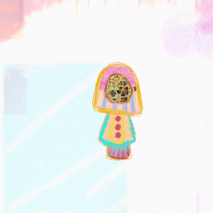
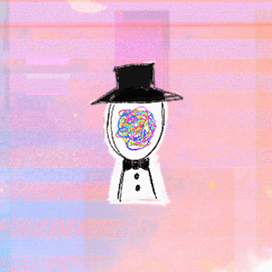
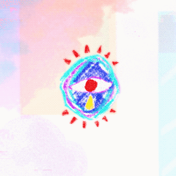
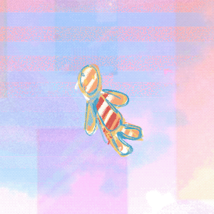
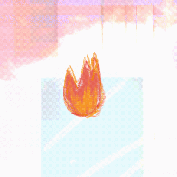
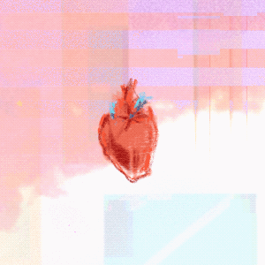
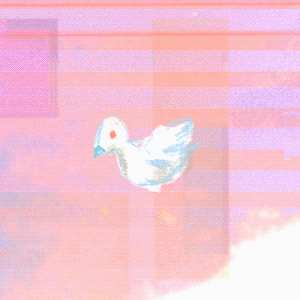
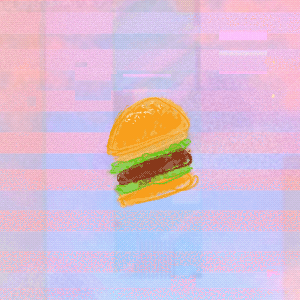
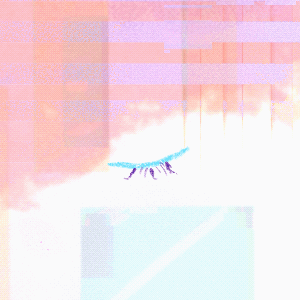
One World, Three Mechanics
The illustrated world, the egg's state progression, and sequential door gating each solved a different layer of the same coherence problem — visual, narrative, and structural.
Illustrated Assets
Every visual element was made in Procreate, including backgrounds, characters, enemies, UI elements, and egg states. The illustration style unified mechanically different levels into one readable, unstable dream space.
The Egg as Progression Indicator
The egg replaces traditional UI by carrying progression through physical change. It cracks after each completed level and opens at the end, so players read progress through the object itself.
Sequential Door Gating
Locked doors enforce level order without written instruction. Each door only unlocks after the previous level is complete — a structural decision that maintained the world's ambiguity while making progression legible. The threshold reads as "not yet" rather than "blocked."
Response & Revision
The art style is strong, but the instructions and level flow are not clear enough.
I changed the progression system. The hub was redesigned and sequential door locking was added in code, so players could not enter levels out of order. Hit confirmation, audio response, and clickable states were also clarified. The goal was better readability without over-explaining the world.
Takeaways
Clarity Comes From Systems
Unclear interaction did not need more text. The world needed stronger signals. Locked doors, egg changes, sound effects, and hit feedback helped players understand progression while staying inside the game.
Visual Consistency as Structural Glue
Three mechanically different levels could easily feel fragmented. The shared illustration style — texture, palette, and character language — became the structure that held the project together.
Prototype Collision Logic Earlier
Illustrated shapes are irregular. Collision readability and movement feel needed tuning that simple geometry wouldn't have required. I'd isolate and test the interaction layer before building the visual system on top of it.
Polish the Feedback Loop, Not Just the Assets
Visual assets were complete; interaction pacing wasn't. Projectile timing, hit response, and traversal feel all needed more tuning. Next time I'd allocate polish time to both in equal measure.